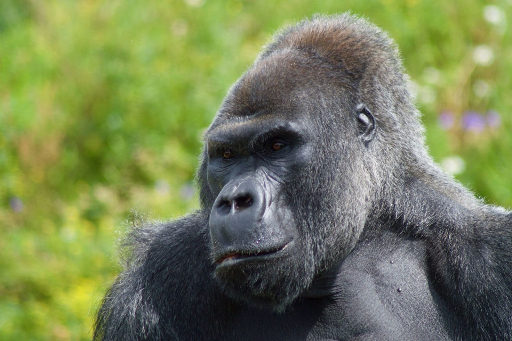
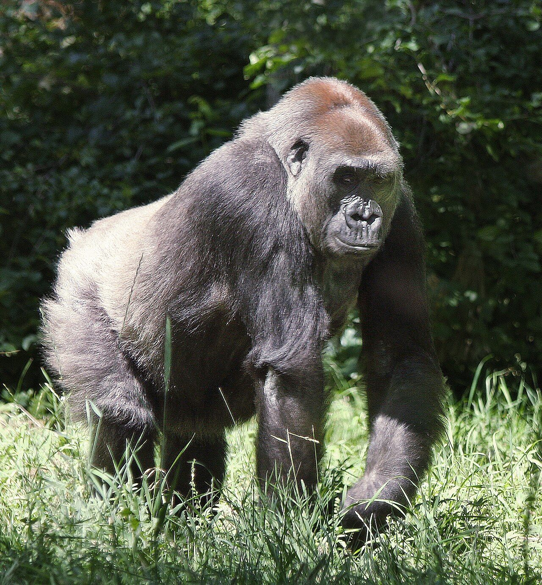
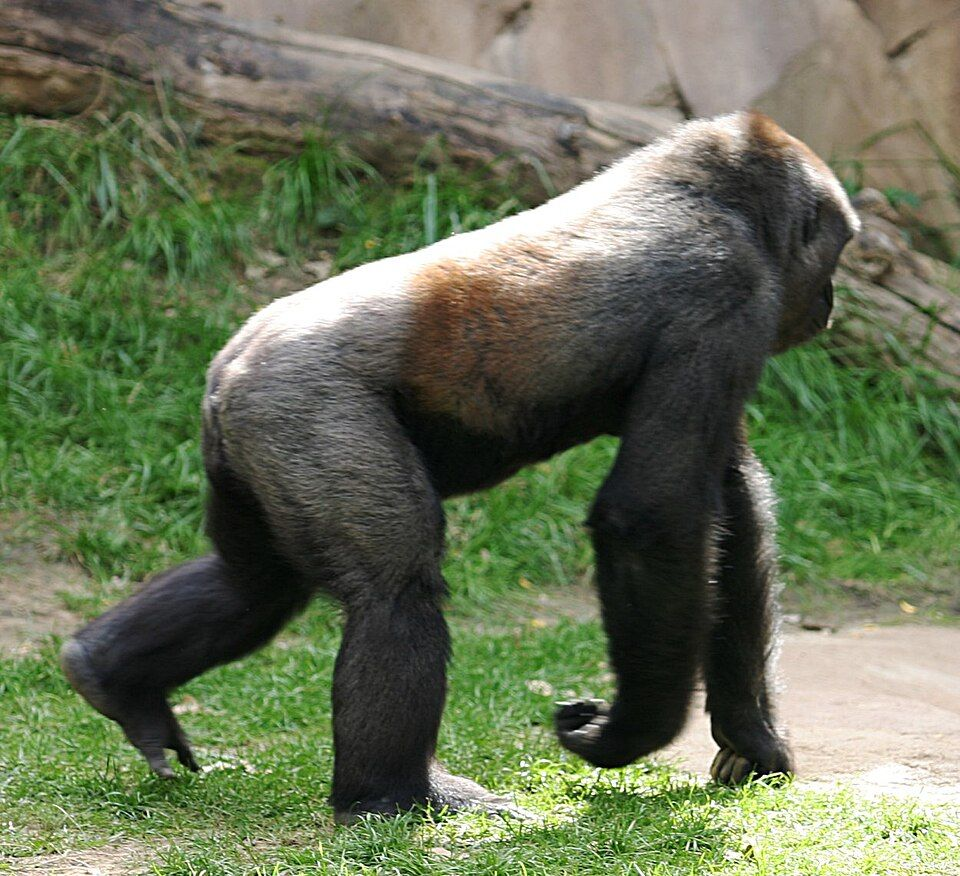
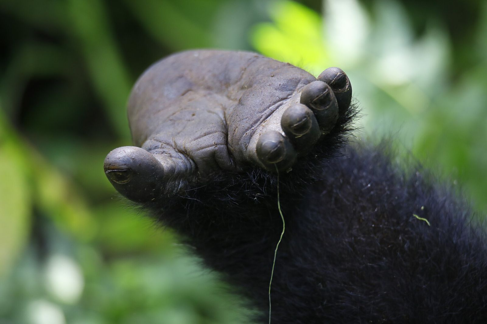
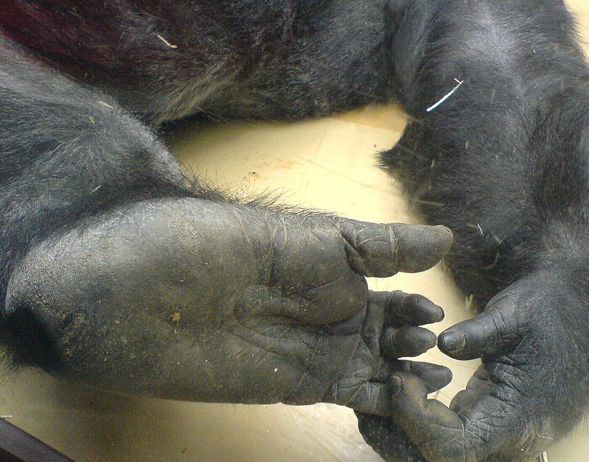
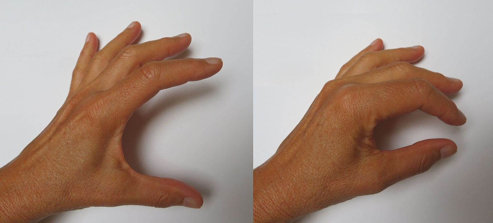
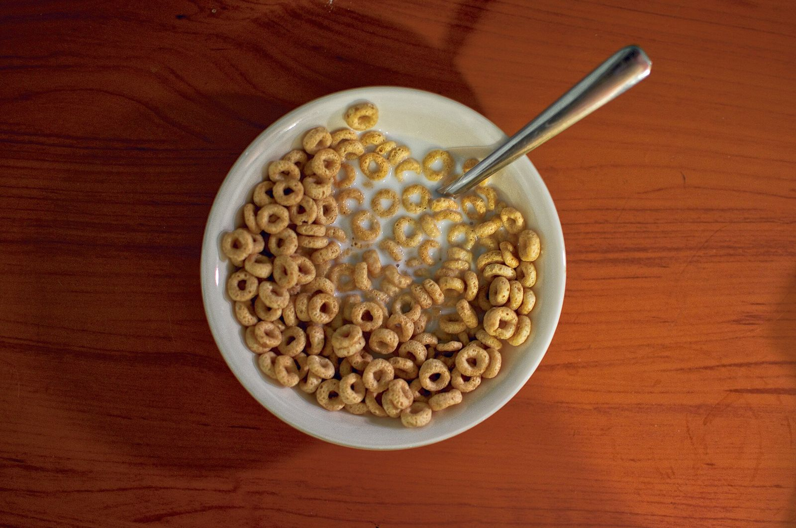
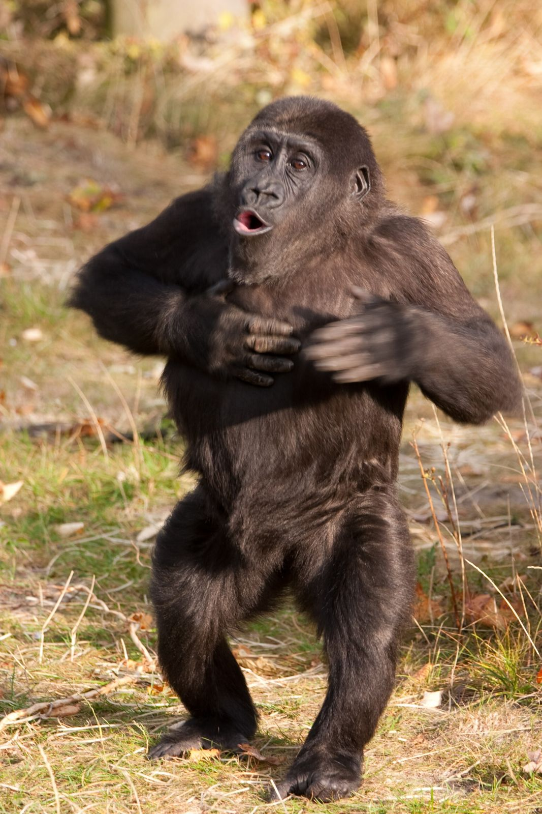
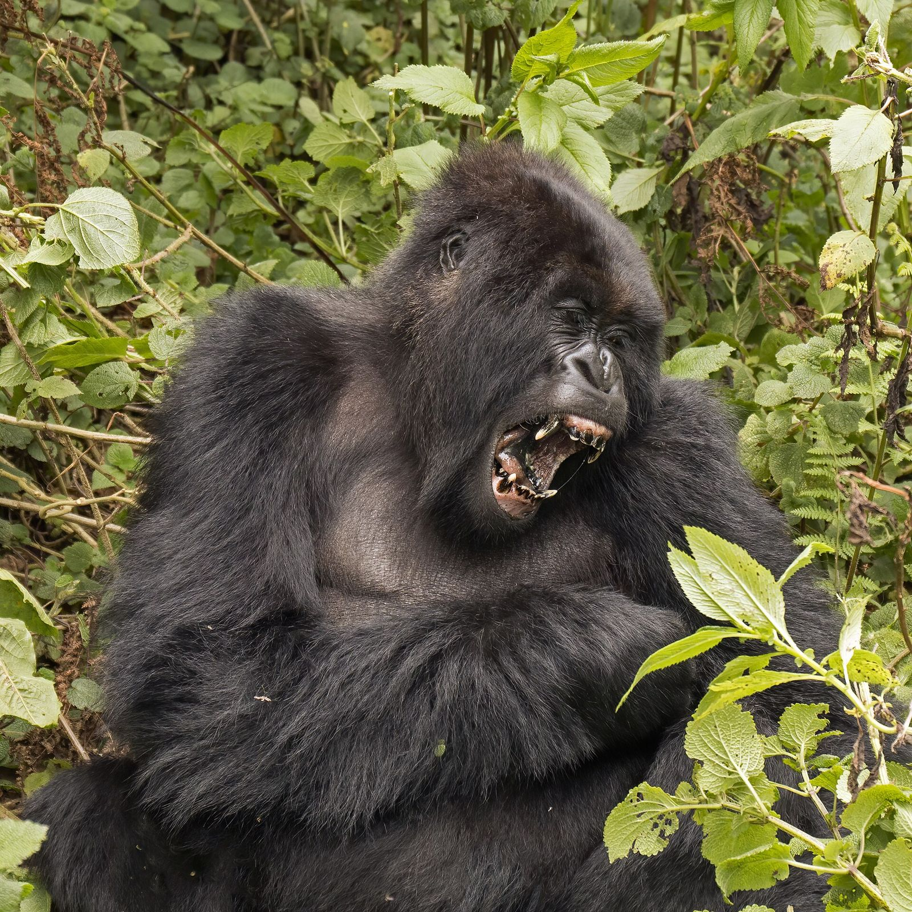
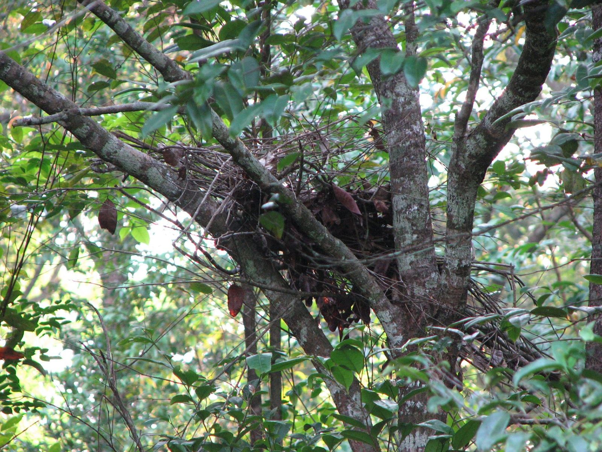

Meet the gorilla!
I am different
than gorillas!
Have you seen a gorilla at the zoo?

Does it look like you?
Photo: Rennett Stowe, CC BY 2.0
A gorilla walks on 4 — on its knuckles!

Can you walk on your knuckles?
Photo: Cburnett, CC BY-SA 3.0
Watch a gorilla walk!
Video needs the internet.
Open on YouTube
Open on YouTube
🧍
God made YOU to stand tall!
🦘 Jump!🩰 Tiptoe!🦩 One foot!
Feet: grabbing vs. standing
Gorilla

Feet that grab like hands
vs
You!
🦶
Feet for walking, running & jumping
Pick up a scarf with your toes!
Photo: Wood Wildlife Photography, CC BY-SA 4.0
Hands: whole-hand grab vs. thumb
Gorilla

Grabs with the whole hand
vs
You!

Your thumb meets your fingers!
Touch your thumb to each finger!
Photos: Chrisian Watzke, CC BY 2.0 · Sciencia58, CC BY-SA 4.0

Pick up just ONE!
God made your fingers for tiny things
Thumb + finger = pinch!
Photo: phrawr, CC BY 2.0
Gorillas drum on their chests!

Drum gently — pat pat pat!
Photo: Sander van der Wel, CC BY-SA 2.0
A baby gorilla learns to drum!
Video needs the internet.
Open on YouTube
Open on YouTube
Grunts & hoots vs. words!
Gorilla

“Hoo! Hoo! Grrr!”
vs
You!
🗣️
“Hello! My name is ___!”
Say: “My name is ___!”
Photo: Charles J. Sharp, CC BY-SA 4.0
A new leaf bed every night!
Gorilla

Builds a nest of leaves
vs
You!
A cozy bed & pillow
God specially
created ME!
🧍Stand tall
👌Thumbs
🗣️Talk
🛏️Cozy bed
🎵
Let’s sing!
“Oh yes I can stand on two legs comfortably”
🧍 Verse 1: Stand up!👌 Verse 2: Pinch!
Photo & video credits
Videos: “Gorilla Walking” by Peter Larson and “Baby Learning How to Gorilla” by BBC Earth, embedded from YouTube. Lesson adapted from the Church in Anaheim preschool topics, Block 1, Week 10.